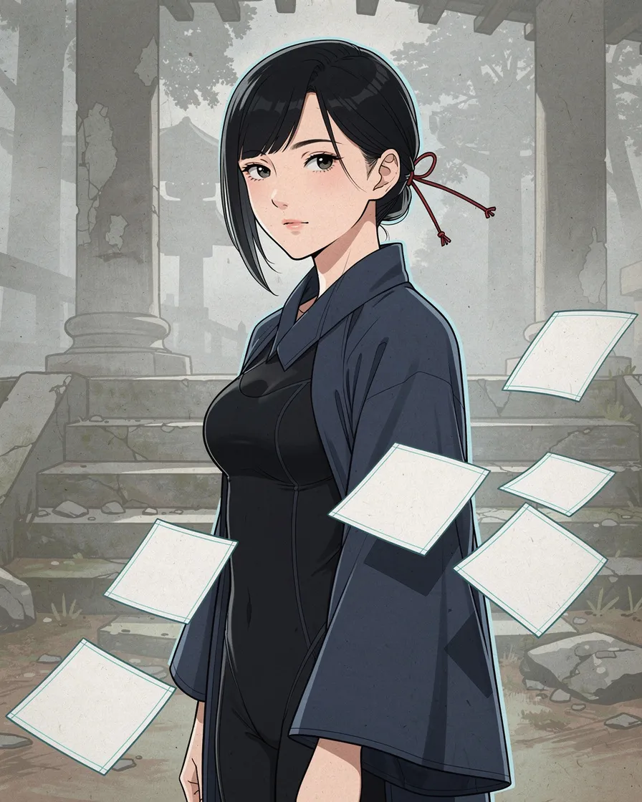
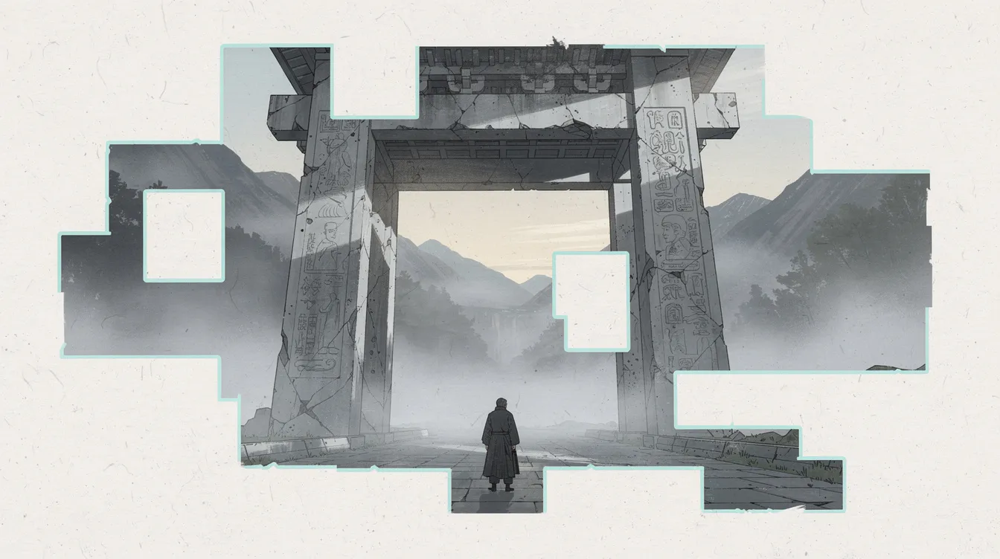
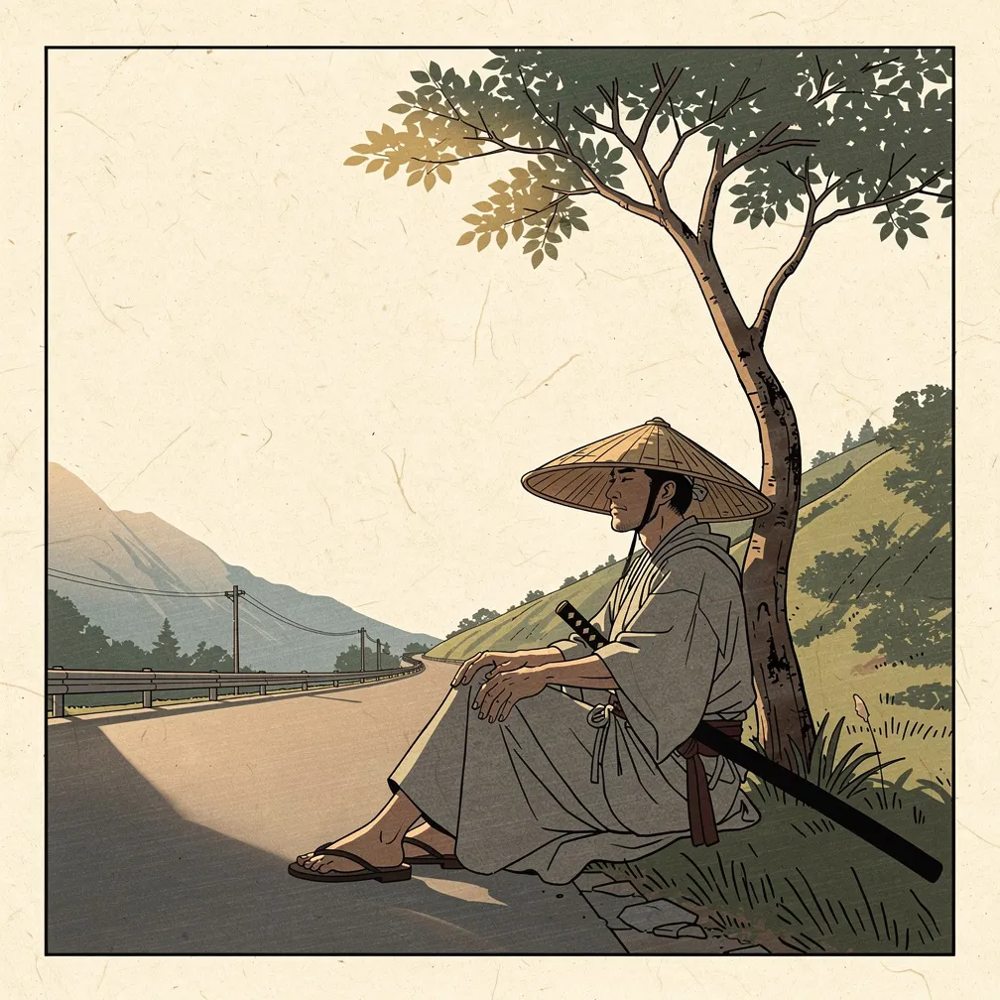
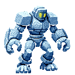

Painted portrait style with the "erased language" paper squares.

The erasure motif framing the whole scene. The glyphs came out looking Egyptian and would need to be kana/kanji-like.

The strongest style match. Needs anachronisms removed (guardrail, power lines).

Retro Diffusion sprite. Came out icy blue instead of stone with paper squares; the prompt needs tightening.